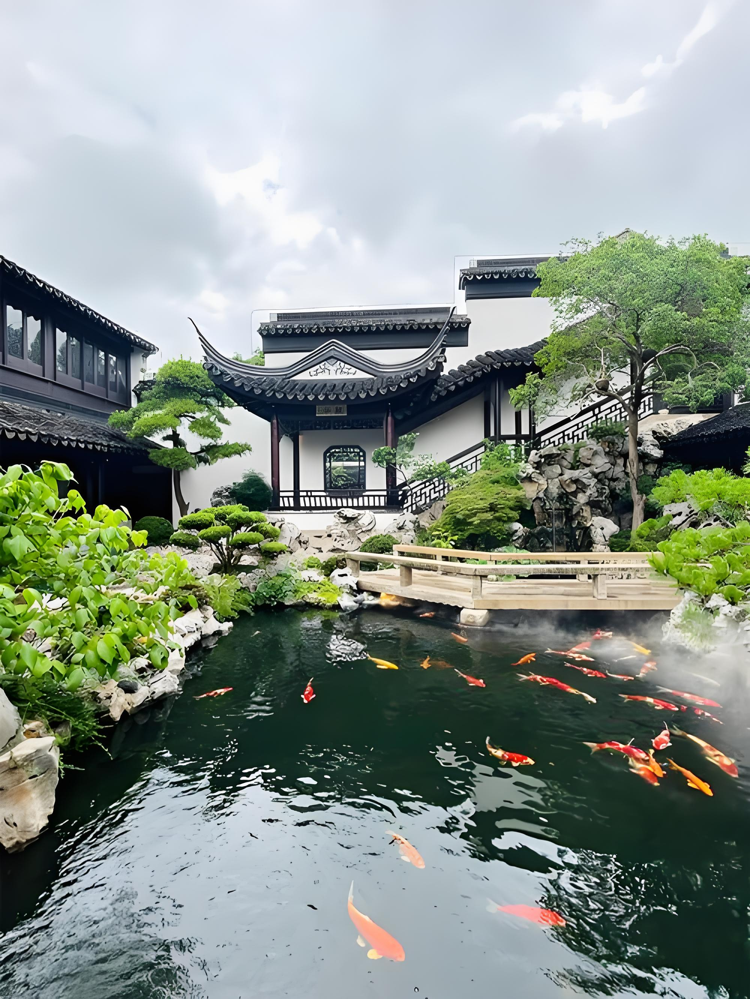

City of Gardens
Suzhou, located in the heart of the Yangtze River Delta, has been celebrated for over 2,500 years as China's garden city. With its intricate network of canals, stone bridges, and classical gardens, it embodies the perfect harmony between nature and human artistry. Nine of its gardens are recognized as UNESCO World Heritage sites.